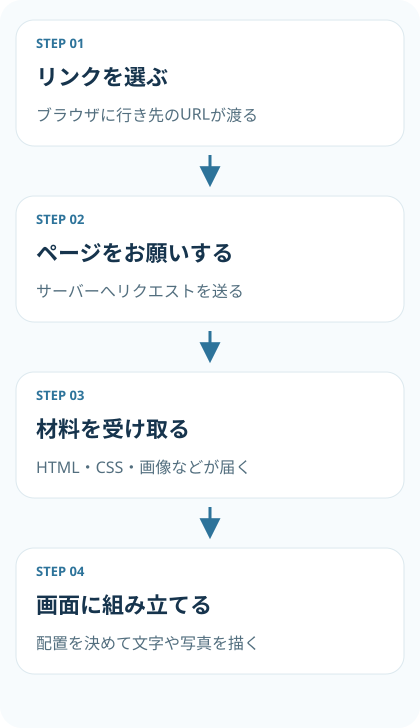

お店の営業時間を調べて、地図を開き、気になった商品を見る。スマホで毎日している操作ですが、そのページを表示しているアプリの名前を意識する機会は少ないかもしれません。SafariやChromeなどの「ブラウザ」は、Webページを受け取り、読んだり操作したりできる画面にするアプリです。まずは、お店のページを一つ開く場面から見ていきましょう。
01 — DIGITAL BASICS
ページを見るアプリがブラウザ
ブラウザは、Webの情報を取りに行き、届いたデータを画面に表示します。スマホの画面に見えている文字や写真は、完成した紙面がそのまま届いているとは限りません。文章や構造を表すHTML、見た目を指定するCSS、画像などを受け取り、端末の中で組み立てているのです。
たとえば飲食店のページなら、「営業時間」という見出し、説明文、店内写真が材料になります。ブラウザはそれぞれの役割を読み取り、画面の幅などに合わせて配置します。だから同じページでも、パソコンとスマホでは並び方が変わることがあります。ページ側の作りとブラウザの表示処理が一緒に働いた結果です。
02 — DIGITAL BASICS
検索サービスとは、どこが違う？
Googleなどの検索サービスは、キーワードから関連するページを探すサービスです。ブラウザは、その検索画面も、見つけたお店のページも表示する役割を持ちます。「ページを探す仕組み」と「ページを表示するアプリ」を分けると、関係を整理できます。
アドレス欄に店名を入れたときは、ブラウザから設定された検索サービスへ問い合わせる場合があります。一方、ページのURLを入力すれば、そのページを直接開けます。同じ入力欄で二つの操作ができるので混同しやすいのですが、検索を使わずにページを見ることもできます。
この節の参考：資料1

03 — DIGITAL BASICS
リンクを押してから画面ができるまで
検索結果のお店のリンクを押すと、ブラウザはリンク先を示すURLを読み取ります。必要に応じてDNSという仕組みで接続先の手がかりを調べ、サーバーと通信します。サーバーは、ページの情報を提供する側です。ブラウザが送るお願いをリクエスト、相手からの返事をレスポンスと呼びます。
最初に届いたHTMLを読むと、使う画像やCSSなどが分かり、それらを追加で取りに行きます。届いた材料から文字の大きさや位置を決め、画面に描きます。JavaScriptというプログラムが使われるページでは、ボタンの反応や後からの表示更新にも関わります。図は理解のために順をまとめたものです。実際には取得と表示が重なることや、保存済みのデータを再利用することもあります。
この節の参考：資料2
04 — DIGITAL BASICS
ページが見えないときも、役割を分けて考える
あるページだけ開けない場合と、どのページも開けない場合では、確かめる場所が違うかもしれません。ページ側、ネットワーク、ブラウザ側など複数の段階があるため、表示できないという結果だけで原因は断定できません。
ここで覚えたいのは、ブラウザがネット上の情報を全部持っているわけではないことです。相手へ依頼し、受け取り、表示する。そのつながりが分かると、「検索結果は見えるのに、その先のページが開かない」という場面も、別々の通信として捉えられるようになります。
REMEMBER
今日覚えておきたい3つのこと
- 01
ブラウザは、Webページを取得して表示するアプリ。
- 02
検索サービスはページを探す役割。ブラウザの中で利用できる。
- 03
画面は、受け取ったHTML・CSS・画像などから作られる。
参考資料・情報確認日
情報確認日：2026年11月17日。通信の基本を理解するために一部を簡略化しています。